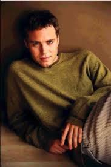
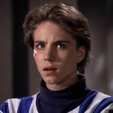

Jonathan Brandis was an American actor. Beginning his career as a child model.
Brandis moved on to acting in commercials and subsequently won television and film roles.
Brandis made his acting debut in 1982 as Kevin Buchanan on the ABC soap opera One Life To Live.
In 1990, he portrayed Bill Denbrough in Stephen King's supernatural horror miniseries It.
Also in 1990, he starred as Bastian Bux in The NeverEnding Story II: The Next Chapter.
In 1993, at the age of 17, he was cast in the role of Lucas Wolenczak, a teen prodigy on the NBC series SeaQuest DSV.
The character was popular among teenage female viewers, and Brandis regularly appeared in teen magazines.
Sadly he committed suicide on November 12, 2003. He was 27 years old.


| YEAR | TITLE | ROLE | NOTE |
| 1982 | One Life To Live | Young Kevin Riley Buchanan | Unknown Episodes |
| 1984 | Kate & Allie | Chip's Friend | Episode: "Odd boy Out" |
| 1986 | Mystery Magic Special | Himself | Special |
| 1986 | Sledge Hammer! | Young Sledge | Episode: "They Shoot Hammer's, Don't They?" |
| 1987 | Good Morning, Miss Bliss | Michael Thompson | Pilot |
| 1987 | Buck James | | Episode: "Sins Of The Father" |
| 1987 | L.A. Law | Kevin Talbot | 2 Episodes |
| 1987 | Poor Little Rich Girl: The Barbara Hutton Story | Lance Reventlow (Age 11) | TV Movie |
| 1988 | Mars: Base One | | Movie |
| 1988 | Webster | Bobby | Episode: "Take My Cousin, Please" |
| 1989 | Full House | Michael Monford | Episode: "A Little Romance" |
| 1989 | Who's The Boss? | Paul | Episode: "Your Grandmother's A Bimbo" |
| 1990 | IT | Bill Denbrough (Age 12) | Miniseries |
| 1990 | Murder, She Wrote | Kevin Bryce | Episode: "If The Shoe Fits" |
| 1990 | Alien Nation | Andron | Episode: "The Touch" |
| 1990 | The Munsters Today | Matt Glover | Episode:"The Silver Bullet" |
| 1990 | The Flash | Terry Cohen | Episode: "Child' Play" |
| 1990 | The Earth Day Special | Himself | |
| 1991 | Our Shining Moment | Michael "Scooter" McGuire | |
| 1991 | Gabriel's Fire | Matthew Fixx | Episode: "Truth & Consequences" |
| 1991 | The Wonder Years | Steve | Episode: "The Yearbook" |
| 1991 | Blossom | Stevie | Episode: "To Tell The Truth" |
| 1991 | Pros & Cons | Danny | Episode: "Once A Kid" |
| 1992 | Do Not Bring That Python Into The House | Gabriel Miller | Movie |
| 1992 | Crossroads | Michael Stahl | Episode: "Freedom Of The Road" |
| 1993-1996 | Seaquest DSV | Lucas Wolenczak | 57 Episodes |
| 1993 | Saved By The Bell: The College Years | Himself | Episode: "A Thanksgiving Story" |
| 1994 | Good King Wenceslas | Prince Wenceslas | Television |
| 1994-1995 | Aladdin | Monzenrath | 8 Episodes |
| 1996 | Her Last Chance | Preston Alteron | Movie |
| 1996 | Born Free: A New Adventure | Randolph "Rand" Thompson | Movie |
| 1996 | Fall Into Darkness | Chad | Movie |
| 1997 | Two Came Back | Jason | Movie |
| 2003 | 111 Gramercy Park | Will Karnegian | Unsold Pilot |